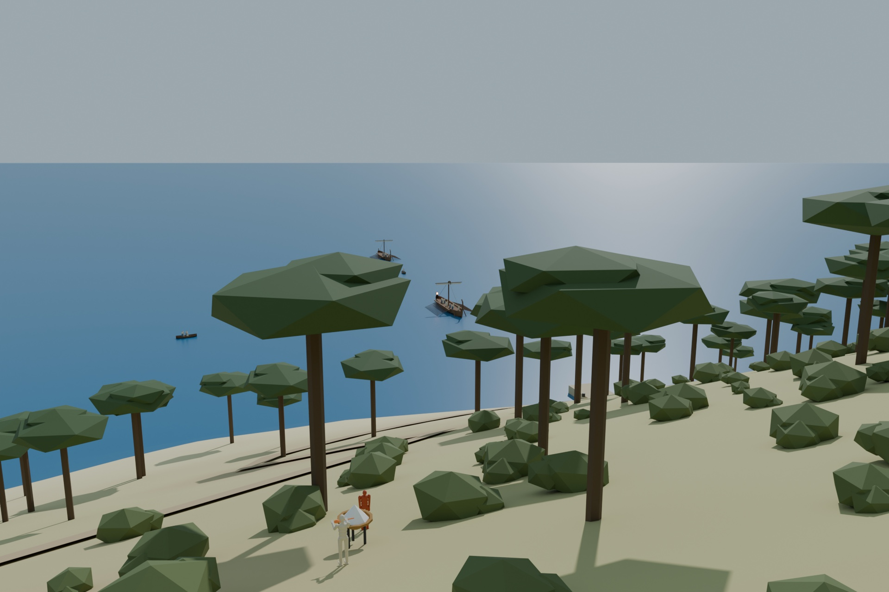
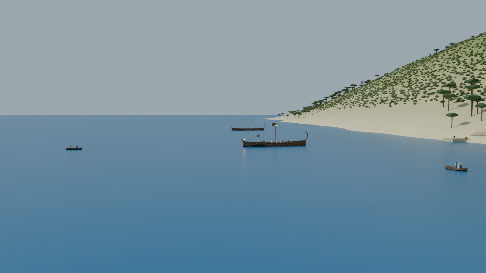
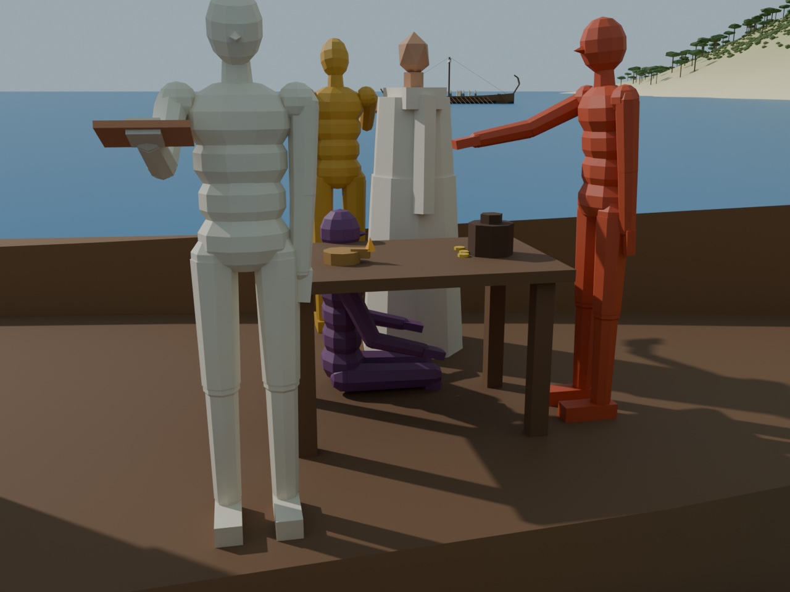
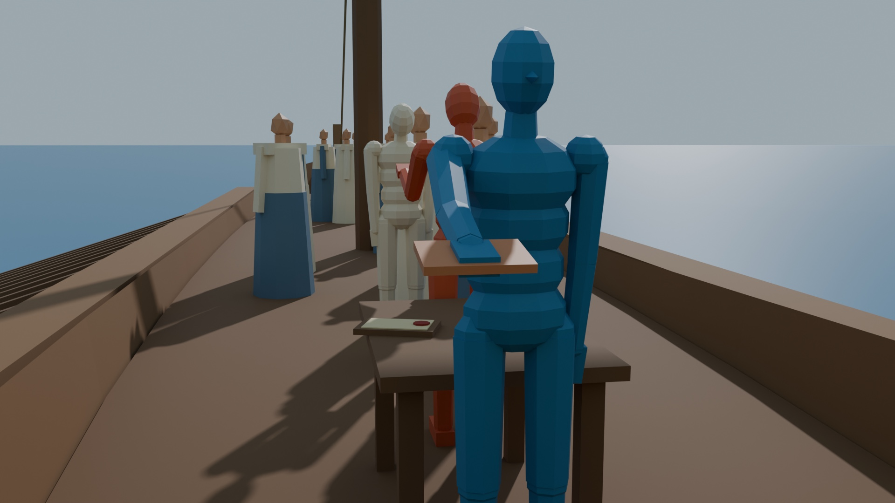
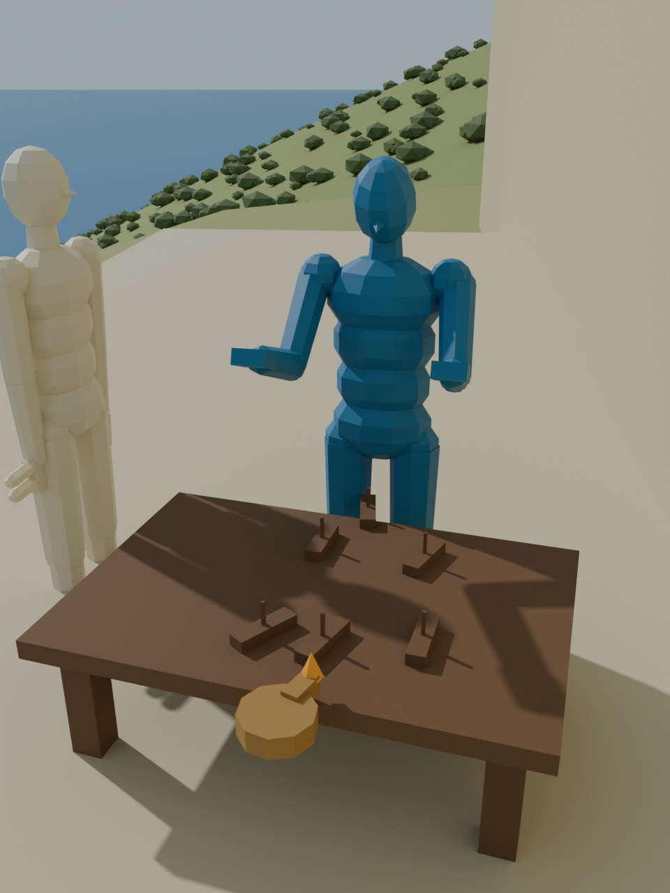
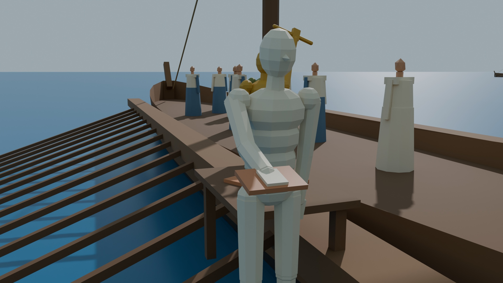
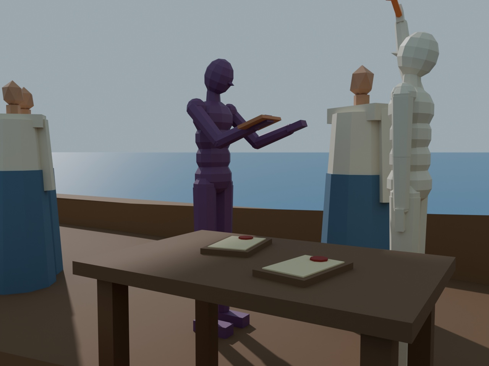
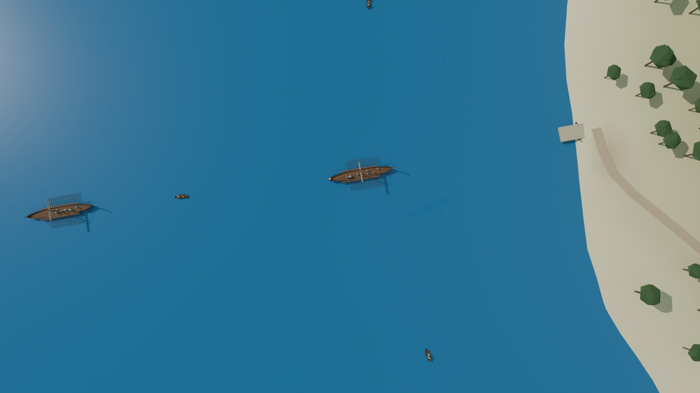
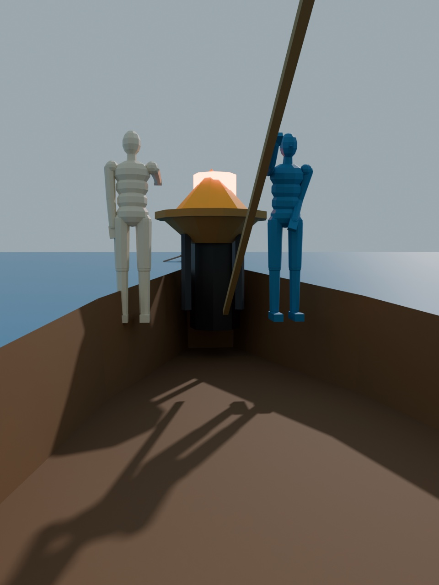

An illustrated chronicle of the defensive warships off the coast of Paxos, and the bound that decides how many traitors an alliance of admirals can survive.
After M. Pease, R. Shostak & L. Lamport, "Reaching Agreement in the Presence of Faults," JACM 27, 2 (April 1980), 228–234, and L. Lamport, R. Shostak & M. Pease, "The Byzantine Generals Problem," ACM TOPLAS 4, 3 (July 1982), 382–401. The complete mathematics, retold.
This volume joins two documents. The first is a short, severe treatise of seven columns on what the geometers called interactive consistency, drawn up for the naval architects of a warship steered by multiple redundant helmsmen and instruments. The second, written two years later by the same three geometers, restates the same profound results as a military problem of treacherous commanders. The dramatic story was far more widely copied than the naval engineering treatise, which confirms a pattern the reader of this series will come to recognize.
The geometers were Πῆς, Σοστάκ and Leslie, the wandering scholar of Volume I, who had paused his travels to advise the coastal confederacy. Their admirals commanded the defensive squadrons of warships stationed in the coastal anchorages off the limestone bluffs of Paxos, guarding against a foreign armada sighted on the horizon.
The central result of the volume is a mathematical bound: with spoken orders, no alliance can survive unless strictly more than two-thirds of its commanders are loyal. Every fortified council and quorum system of the later volumes is built upon this bedrock.
— The Translator

When dark sails appear on the twilight horizon, the defensive warships of Paxos must decide upon a coordinated plan of action: either to ATTACK (1) or to FALL-BACK (0).
Because the enemy fleet is formidable, the defensive warships must act strictly in unison. If only some of the warships attack while the others fall back behind the harbor chains, the attacking ships are surrounded, rammed, and overwhelmed in open water. But some of the admirals may be traitors, bribed by foreign gold to prevent the loyal admirals from reaching agreement. The geometers sought a procedure guaranteeing two conditions:
The loyal admirals obey whatever rule the procedure dictates. The traitors may do anything they wish: they may send conflicting words to different ships, remain silent, or deliberately forge false reports. The method must guarantee Condition A regardless. Condition B cannot easily be defined in the abstract, since that requires defining what a "bad plan" is. Instead, the geometers considered how a collective decision is formed. Each admiral inspects the weather and the enemy vanguard, forming an initial observation v(i) ∈ {ATTACK, FALL-BACK}. Each admiral then shares his assessment with the others, and all combine the collected values v(1), …, v(n) using a fixed, deterministic decision rule — such as a simple majority vote. A few traitors can then tip the outcome only if the loyal admirals were already evenly split, in which case neither plan is disastrous. To ensure that every loyal admiral computes the same vote, what is strictly needed is:
Both conditions concern the single assessment sent by one admiral. Thus the geometers reduced the entire problem to that of a single Flag Admiral (the commander) sending an order to his n − 1 Squadron Admirals (the lieutenants):
A Flag Admiral must send an order to his n − 1 squadron admirals such that:
IC1. All loyal squadron admirals obey the same order.
IC2. If the Flag Admiral is loyal, then every loyal squadron admiral obeys the order he sends.
These are the famous interactive consistency conditions. If the Flag Admiral is loyal, IC1 follows directly from IC2 — but the Flag Admiral may himself be the traitor! To solve the general problem where every admiral contributes a value, each admiral i takes a turn as Flag Admiral and dispatches the order "use v(i) as my assessment", with the other n − 1 admirals acting as squadron commanders. Once every admiral possesses the vector of values, all apply the identical majority rule.1

The problem seems deceptively simple. Its true difficulty is revealed by an astonishing fact: if the admirals communicate only by spoken messages carried by dispatch skiffs, no method can work unless more than two-thirds of the admirals are loyal. In particular, three admirals cannot cope with a single traitor. A spoken message is one whose contents are delivered by the word of the skiff's crew, with no unforgeable seal, so a traitorous commander can transmit any lie he pleases.
To see why, consider two scenarios from the viewpoint of Admiral 1:
Scenario A (Loyal Commander, Traitorous Peer): The Flag Admiral is loyal and sends a skiff to both squadrons ordering ATTACK. But Admiral 2 is a traitor. Admiral 2 sends a skiff to Admiral 1 falsely claiming: "The Flag Admiral ordered me to FALL-BACK." For IC2 to hold, Admiral 1 must obey the loyal Flag Admiral: he must ATTACK.
Scenario B (Traitorous Commander, Loyal Peer): The Flag Admiral is a traitor. He sends a skiff to Admiral 1 ordering ATTACK, but sends another skiff to Admiral 2 ordering FALL-BACK. Admiral 2 is loyal; he truthfully sends a skiff to Admiral 1 reporting: "The Flag Admiral ordered me to FALL-BACK."

Now observe Admiral 1's dilemma. In both scenarios, he receives ATTACK directly from the Flag Admiral's skiff, and FALL-BACK reported by Admiral 2's skiff. He cannot tell who is lying. If he attacks in Scenario A, he must attack in Scenario B as well. By the exact same logic, Admiral 2, who received FALL-BACK directly from the Flag Admiral in Scenario B, must fall-back. In Scenario B, therefore, Admiral 1 attacks while Admiral 2 falls back. The fleet is split, and IC1 is violated! No protocol exists that allows three warships to agree in the presence of one traitor.
This argument may appear convincing, but the reader is strongly advised to be very suspicious of such informal reasoning. The result is correct, but equally plausible "proofs" of invalid results have been published. There is no area of mathematics in which informal reasoning is more likely to lead to error than in the study of this type of protocol.
For the rigorous proof, the later paper refers to the 1980 treatise. There, the n ≤ 3m helmsmen are partitioned into three nonempty groups A, B, and C, none containing more than m members. Three complete histories are constructed such that members of group A cannot distinguish the traitorous-commander history from a history where the commander is loyal, and members of B similarly cannot distinguish it from a history where the commander gave the opposite order. The impossibility holds no matter how many rounds of skiffs are rowed across the sea.

From the case of three warships, the geometers derived the general lower bound by contradiction. Suppose some method exists that allows 3m or fewer warships to cope with m traitors. Call this hypothetical fleet the Illyrian navy.2 Now let three Greek admirals simulate the entire Illyrian fleet: the Greek Flag Admiral simulates the Illyrian commander and up to m − 1 Illyrian captains; each of the two Greek squadron admirals simulates up to m Illyrian captains. Because at most one Greek admiral is a traitor, he simulates at most m Illyrian captains; hence at most m simulated Illyrians are traitors. By hypothesis, the Illyrian method works, forcing all loyal simulated ships to reach the same verdict. But this allows our three Greek admirals to solve the impossible 3-ship dilemma! Contradiction.
With spoken messages, no fleet with fewer than 3m + 1 warships can cope with m traitors.
One might suspect the impossibility arises from demanding exact agreement on a binary choice. It does not. Suppose the Flag Admiral orders a time of engagement (e.g. dawn, midday, dusk), and the requirement is merely approximate synchronization:
If three admirals could achieve approximate agreement with one traitor, they could achieve exact agreement. The commander encodes ATTACK as the 1st hour and FALL-BACK as the 2nd hour. A squadron admiral who receives an order at or before 1:10 attacks; at or after 1:50, falls back; between the two, he inquires what his peer received and adopts his decision. By IC1′, the two loyal admirals cannot land on opposite extremes. Thus the 3m + 1 bound applies equally to approximate agreement.
Having proven that 3m + 1 warships are necessary, the geometers proved they are sufficient by constructing the recursive algorithm OM(m). First, they formalized the physical conditions under which dispatch skiffs operate as three precise assumptions:
Assumptions A1 and A2 prevent a traitorous admiral from intercepting skiffs between other ships or claiming falsely to speak for another admiral. A3 prevents a traitor from stalling the fleet by refusing to dispatch skiffs. If no skiff arrives from a ship within the allotted time, the receiving admiral substitutes the safe default: FALL-BACK.
The oral protocol OM(m) is defined recursively for m traitors, using a deterministic function majority(v1, …, vk) that returns the majority value if one exists, and FALL-BACK otherwise:

Consider the minimal fleet: n = 4 warships and m = 1 traitor.
Case 1: The Traitor is a Squadron Admiral (say, Admiral 3). The Flag Admiral is loyal and dispatches ATTACK to all three squadrons. In Round 2, Admiral 1 and Admiral 2 relay ATTACK to each other truthfully. Traitorous Admiral 3 may send FALL-BACK (or garbage). Admiral 2 receives the vector {ATTACK, ATTACK, FALL-BACK}. The majority is unambiguously ATTACK. IC1 and IC2 are preserved.
Case 2: The Traitor is the Flag Admiral. The Flag Admiral sends contradictory orders: ATTACK to Admiral 1, FALL-BACK to Admiral 2, and ATTACK to Admiral 3. In Round 2, the three loyal squadron admirals relay what they received truthfully via skiffs. Every loyal admiral receives the exact same vector {ATTACK, FALL-BACK, ATTACK}. All compute majority(ATTACK, FALL-BACK, ATTACK) = ATTACK! Even though the Flag Admiral lied, the fleet acts in unison, avoiding annihilation.
For any m and k, OM(m) satisfies IC2 if there are more than 2k + m admirals and at most k traitors.
For any m, OM(m) satisfies IC1 and IC2 if there are more than 3m admirals and at most m traitors.
It is the traitors' ability to fabricate lies during relay that makes oral consensus so demanding. If that ability is restricted, the problem becomes dramatically easier. The geometers equipped the admirals with unforgeable bronze signet rings pressed into hot pitch on wooden dispatch slates:
Nothing is assumed about a traitor's seal; traitors may share their signet rings to collude. With seals, the 3m + 1 barrier collapses: the protocol below tolerates m traitors for any number of warships n ≥ m + 2! Even three warships can withstand a traitorous commander.
In algorithm SM(m), the Flag Admiral (admiral 0) seals an order and sends it by skiff to each squadron admiral. Each squadron admiral appends his own seal and relays the slate to the others. An admiral maintains a set Vi of properly signed orders. A deterministic function choice satisfies choice({v}) = v, choice(∅) = FALL-BACK, and choice({ATTACK, FALL-BACK}) = FALL-BACK.

Now observe how three warships resolve the traitorous commander dilemma: the Flag Admiral sends ATTACK to Admiral 1 and FALL-BACK to Admiral 2. Admiral 1 signs and forwards ATTACK to Admiral 2; Admiral 2 signs and forwards FALL-BACK to Admiral 1. Both loyal admirals now hold both slates, each bearing the genuine signet of the Flag Admiral! Because no loyal admiral could forge the commander's seal, both know the Flag Admiral is treacherous. Both evaluate choice({ATTACK, FALL-BACK}) = FALL-BACK in perfect harmony!4
For any m, SM(m) solves the problem of the admirals if there are at most m traitors.

In an open sea, every warship can dispatch a skiff directly to any other. But along the rugged coastline of Paxos, jagged limestone reefs, shallows, and violent rip tides prevent skiffs from rowing between certain anchorages. The naval communication channels form an undirected graph, with an edge existing only between warships separated by safe, navigable water.
For spoken orders, the connectivity requirements are demanding. The geometers defined a regular set of neighbours: a set of p neighbours of admiral i that have disjoint paths to any other admiral k. The graph must be 3m-regular:
For any m > 0 and p ≥ 3m, algorithm OM(m, p) solves the problem with at most m traitors if the naval channel graph is p-regular.
A 3m-regular graph demands tremendous connectivity: with 3m + 1 warships, every single warship must have a direct channel to every other. But with sealed orders, the requirement drops to the theoretical minimum: the loyal warships must merely form a connected subgraph! So long as a skiff can find some route between any two loyal warships without passing through a traitor's anchorage, consensus is assured.
If there are at most m traitors and the channel subgraph among loyal warships is connected with diameter d, then SM(m + d − 1) solves the problem of the admirals. In particular, if the loyal warships are connected at all, SM(n − 2) guarantees consensus.
The geometers closed by returning to the engineering problem that inspired their research. Apart from crafting every bronze bolt and timber so flawlessly that it never breaks, the only known way to build an ultra-reliable warship is to employ multiple redundant helmsmen and navigators, each computing the steering heading and taking a majority vote. That works only if all sound helmsmen compute with identical inputs. But every sensor reading comes from a single physical point — one water-clock, one compass needle, one lookout — and a failing sensor can send conflicting signals to different watchmen.

It is tempting to imagine a mechanical fix — make all helmsmen stare at the same signal brazier. But a failing lamp can gutter at an intermediate threshold that one lookout registers as lit and another as dark. There is no physical rigging that can guarantee agreement from a faulty source without running the protocol of the admirals.
Furthermore, the geometers showed that the mathematical assumptions A1–A4 require real physical foundations:
Surviving arbitrary treachery is computationally expensive. Both OM(m) and SM(m) require message chains up to m + 1 rounds: an admiral may have to wait for an order relayed through m intermediate skiffs. Fischer and Lynch (1982) proved that m + 1 rounds are strictly necessary for any consensus protocol tolerating m Byzantine faults. The geometers' algorithms are time-optimal.
| Protocol | Warships Needed (m Traitors) | Rounds | Naval Channels Required |
|---|---|---|---|
| Spoken Orders (OM) | ≥ 3m + 1 (strictly necessary) | m + 1 | Every channel, or a 3m-regular graph |
| Sealed Signets (SM) | ≥ m + 2 (any number) | m + 1 (m + d with reefs) | Loyal warships remain connected |
When complete confidence against malicious actors is demanded, the bound 3m + 1 cannot be evaded. The price must be paid in warships, in skiff crews, and in the time required for repeated rounds of verification.
| In the coastal fleet | In the papers (Pease, Shostak, Lamport 1980, 1982) |
|---|---|
| Warship / Admiral | Processor / Replicated node |
| Bribed / Traitorous Admiral | Byzantine faulty node (arbitrary, malicious, or erroneous behavior) |
| Flag Admiral & Squadron Admirals | Sender & Replicas; Interactive Consistency (IC1, IC2) |
| Dispatch skiff message | Message passing network packet |
| Spoken message | Unauthenticated message (assumptions A1–A3) |
| Illyrian warships simulation | Simulation reduction proving the 3m + 1 lower bound |
| Bronze signet ring in hot wax | Cryptographic digital signature (public-key authentication, A4) |
| Reefs and channels | Network topology graph; p-regularity; diameter d |
| The flagship Sift | SIFT: Software-Implemented Fault Tolerance (flight control at SRI) |
| ATTACK (1) / FALL-BACK (0) | Binary consensus decision output |
The 3m + 1 bound for unauthenticated Byzantine agreement is the foundational cornerstone of all fault-tolerant distributed systems. It governs modern blockchain networks, aerospace flight controllers, and practical state machine replication protocols like PBFT (Castro & Liskov 1999, retold in Volume VII), which uses exactly 3f + 1 replicas to tolerate f malicious nodes. The algorithms here assume synchrony (bounded skiff times and clocks). When synchrony is absent, the FLP impossibility (Volume II) takes over; and when synchrony is partial, Paxos (Volume IV) and PBFT find their footing.
The original papers this volume retells: